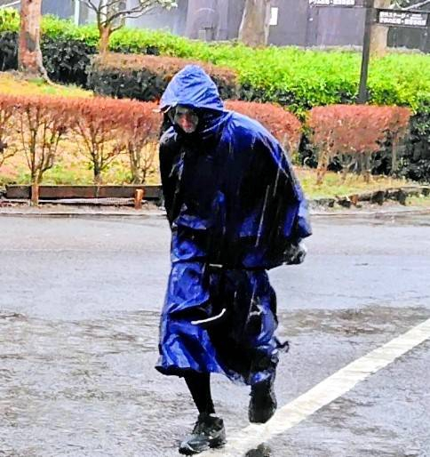
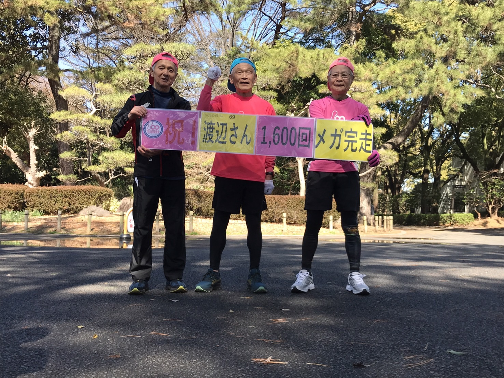

2026-02-25 18:03:20
2026年2月25日（水）平塚総合公園 終日雨 8時14.8度
| No | 白鷺 | 氏名 | 種目 | タイム | フル百 |
|---|---|---|---|---|---|
| 1 | 11 | 渡辺 富夫 | フル | 6:51:38 | 69 |
| 2 | 30 | 竹田 昭彦 | フル | 9:36:22 | 3 |
| 3 | 98 | 田中 国貞 | フル | 9:49:10 | 746 |
| 4 | 403 | 飯田 和好 | 1.7km | 0:21:17 | 861 |
| 5 | 333 | 山口 義治 | 1.7km | 0:27:31 | 827 |
今日は終日雨でした。風もあり満開になった河津桜や玉縄桜の花びらが散っていました。
そんな中、渡辺トミーが1600回達成されました。
おめでとうございます。さらに回数を伸ばされ再び日本一のタイトルを獲得されますように。
都合で記念写真は次回3月4日に持ち越ししました。
皆さん参集下さい。
飯田さんからいなり寿司と甘酒の差し入れを頂きました。ありがとうございました。
当番代理 田中

渡辺さんの勇姿

渡辺さん記念写真（湘南WM777回時に撮影）